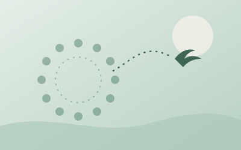
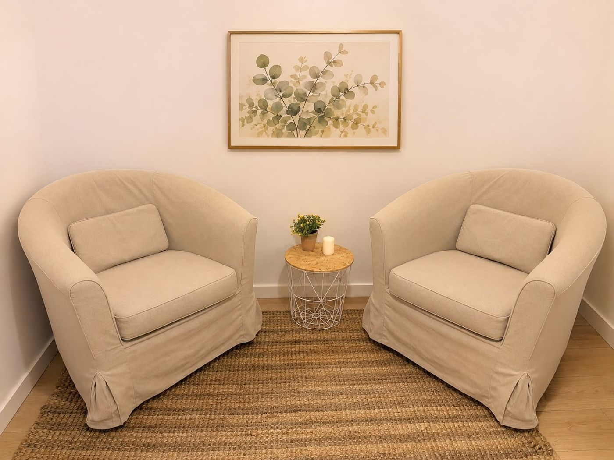
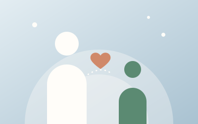

Así son las secuelas psicológicas de quienes salen de grupos coercitivos y sectas
Publicado en Psicología y Mente.
Psicología en Barcelona
En Alire te acompañamos con cercanía y rigor profesional para que recuperes tu bienestar emocional. Atención presencial y online.

“No tienes que poder con todo tú solo.”
Servicios
Terapias adaptadas a cada persona y a cada momento vital.
Ansiedad, estrés, depresión, autoestima, duelo o gestión emocional. Un proceso a tu ritmo.
Mejora la comunicación, resuelve conflictos y recupera la conexión con tu pareja.
Ansiedad, autoestima, gestión emocional y conflictos familiares, acompañando también a la familia.
Herramientas para mejorar la convivencia y afrontar juntos los cambios y las crisis.
La misma calidad desde donde estés, por videollamada segura y con total confidencialidad.
Acompañamiento en pérdidas, rupturas y procesos de cambio vital, a tu ritmo y sin juicios.
Terapia individual: 60 € · Terapia de pareja: 75 € · Terapia familiar: 60 € · Sesiones de 55-60 min, presencial u online
Pago en efectivo, transferencia, Bizum o PayPal. Solo atención privada (sin aseguradoras).
Cómo trabajamos
Escríbenos o llámanos y resolvemos tus dudas sin compromiso.
Valoramos juntos tu situación y lo que necesitas.
Diseñamos un proceso terapéutico a tu medida.
Seguimos tu evolución hasta alcanzar tus objetivos.
Nuestro espacio
Consultas luminosas y acogedoras en Sant Gervasi, Barcelona.
Equipo
Profesionales con formación especializada y continua.
Psicoterapeuta
Ansiedad, estrés, autoestima, terapia de pareja y duelo migratorio. Enfoque integrador y cognitivo-conductual. Presencial y online.
Soy Norma, tengo amplia experiencia en el tratamiento de diversos problemas psicológicos y emocionales, especialmente ansiedad, estrés, autoestima, terapia de pareja y duelo migratorio. Mi objetivo es guiarte hacia un bienestar que se pueda consolidar en el tiempo y que te permita vivir una realidad más satisfactoria y plena. Creo firmemente en la capacidad de cada persona para transformarse y superar los desafíos de la vida.
Uso una perspectiva integradora que me permite entender a cada persona como única y aplicar un tratamiento amoldado a sus necesidades. Trabajaremos no sólo para que comprendas qué te ocurre, sino para que empieces a notar cambios prácticos que te ayuden a sentirte mejor y a manejar tus dificultades con mayor claridad y recursos.
En las primeras sesiones nos centramos en comprender tu situación actual, identificar los patrones que mantienen el malestar y empezar a desarrollar formas más ajustadas y saludables de afrontarlo. El proceso combina herramientas basadas en la evidencia con un acompañamiento cercano, respetuoso y sin juicios.
No creo en soluciones genéricas: cada persona es única, y adaptaré los enfoques terapéuticos a tus necesidades específicas.
Psicólogo General Sanitario · Nº col. 30.906
Más de 10 años de experiencia en ansiedad, terapia de pareja, autoestima, gestión emocional y dependencia emocional. Castellano, catalán e inglés.
Soy psicólogo en Barcelona y llevo más de 10 años acompañando a personas que están pasando por ansiedad, problemas de pareja o dificultades con su autoestima. Trabajo con adolescentes y adultos que sienten que están estancados, que repiten situaciones que les hacen daño o que no saben cómo gestionar lo que les está ocurriendo.
Mi forma de trabajar es clara, cercana y práctica. No me centro solo en hablar, sino en entender bien qué está pasando y ayudarte a hacer cambios concretos desde el inicio, para que notes avances reales en tu día a día.
Trabajo desde un enfoque integrador, combinando terapia cognitivo-conductual, terapia breve y trabajo emocional, adaptándolo a cada persona. Si buscas un espacio donde sentirte cómodo/a, hablar con claridad y empezar a cambiar lo que no te está funcionando, podemos trabajarlo juntos.
Soy un apasionado de las personas y de sus historias: sus decisiones, sus miedos, sus fracasos, sus ilusiones y su forma de enfrentar la realidad. A través de eso podremos entender el camino que te permitirá transformar tu situación y encontrar paz y tranquilidad.
Nueva incorporación
Muy pronto se une al equipo de Alire un nuevo profesional.
Testimonios
“Muy buena psicóloga, me ha ayudado a comprender de dónde provenía la ansiedad que estaba sintiendo y a plantar soluciones a los problemas que la estaban causando.”
“He hecho aproximadamente 6 meses de terapia semanal con Pol y me ha ayudado a ver las cosas y a tomarme la vida de una forma totalmente distinta. Mis niveles de ansiedad prácticamente han desaparecido.”
“Era la primera vez que iba al psicólogo y tenía bastante miedo. Desde el primer día me hizo sentir cómodo, escuchado y en confianza, sin juicios.”
“Estamos muy agradecidos con Pol por su enfoque en nuestra terapia de pareja. Gracias a sus pautas, hemos mejorado nuestra comunicación y aprendido a valorarnos más.”
“Me acompañó durante un momento muy complicado en el que enfrenté varios duelos simultáneos. Puedes ir paso a paso y poco a poco. Es comprensiva, amable y lo hace fácil.”
“Fui víctima en una relación de pareja de una persona con narcisismo y las sesiones con Pol me ayudaron a darme cuenta de todo y poder salir de ahí. Lo recomiendo totalmente.”
“Salgo siempre aprendiendo algo nuevo y con muchas ganas de volver. Gracias Norma por ser tan cercana y preocuparte por tus pacientes.”
“Es un profesional que va al grano, es directo y te ayuda a reconducir tus problemas en poco tiempo. Me ha hecho sentir muy cómoda a pesar de tener que enfrentar cosas que no había querido ver.”
“Recomiendo a Norma encarecidamente. Fue la clave de mi recuperación por estrés y ansiedad. Me acompañó en el proceso de una manera muy efectiva.”
★ 5,0 en Psicología y Mente · Opiniones de Norma (65 + 21 en Doctoralia) y de Pol (65 + 41 en Doctoralia)
Blog

Publicado en Psicología y Mente.
Cómo transformar los conflictos en oportunidades para crecer juntos.

Pautas para ayudar a los más pequeños a expresar lo que sienten.
Contacto
Cuéntanos qué necesitas y te responderemos en menos de 24 horas.